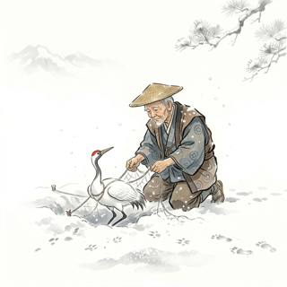
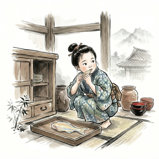

竹取物語
竹林で光る竹から生まれた小さな女の子、かぐや姫。美しく成長した彼女は、多くの貴公子の求婚を退け、やがて月に帰っていく物語...

鶴の恩返し
助けた鶴が美しい娘となって現れ、恩返しに織物を織り続ける。覗いてはいけない約束の向こうに、静かな別れが待つ昔話。

八百比丘尼
不思議な人魚の肉を口にした娘が、永い時を生きることになる。静けさの中に余韻が残る、少しもの悲しい伝承。
竹林で光る竹から生まれた小さな女の子、かぐや姫。美しく成長した彼女は、多くの貴公子の求婚を退け、やがて月に帰っていく物語...

助けた鶴が美しい娘となって現れ、恩返しに織物を織り続ける。覗いてはいけない約束の向こうに、静かな別れが待つ昔話。

不思議な人魚の肉を口にした娘が、永い時を生きることになる。静けさの中に余韻が残る、少しもの悲しい伝承。